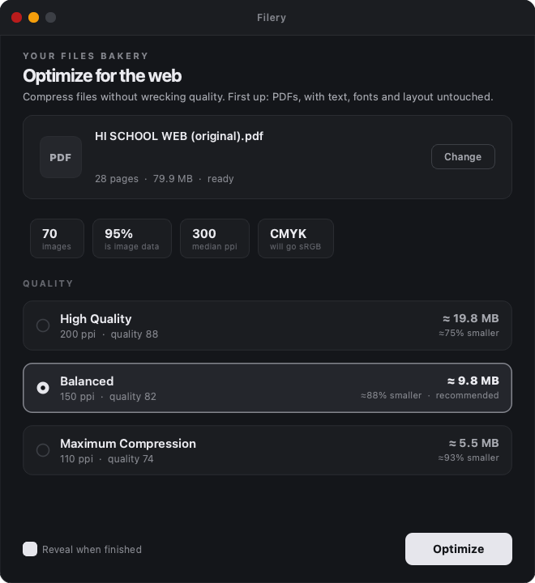

Filery shrinks bloated files down to web size without wrecking their quality. Text, fonts and layout are never touched.
Almost never the text. On that 28 page file, 95 percent of the bytes were images, every one of them CMYK at 300 to 411 ppi. Correct for a printing press, pure waste on a web page.
Drops a whole colour channel and makes colour render consistently across browsers instead of leaving each viewer to interpret it.
Filery measures where each image actually lands on the page, not what its metadata claims. Nothing is ever upscaled.
Photographs get JPEG. Line art, logos and charts stay lossless, because JPEG rings around hard edges.
Output is linearized, so pages start rendering while the file is still downloading. Metadata and unused objects are stripped.

Drop a file in, pick how hard to squeeze, and Filery shows the predicted size before you commit. Balanced is the default.
200 ppi. Around 82 percent smaller. For pages that will be zoomed or printed casually.
150 ppi. Around 91 percent smaller. Retina sharp at full page zoom. The recommended default.
110 ppi. Around 94 percent smaller. The smallest practical size that stays comfortably readable.